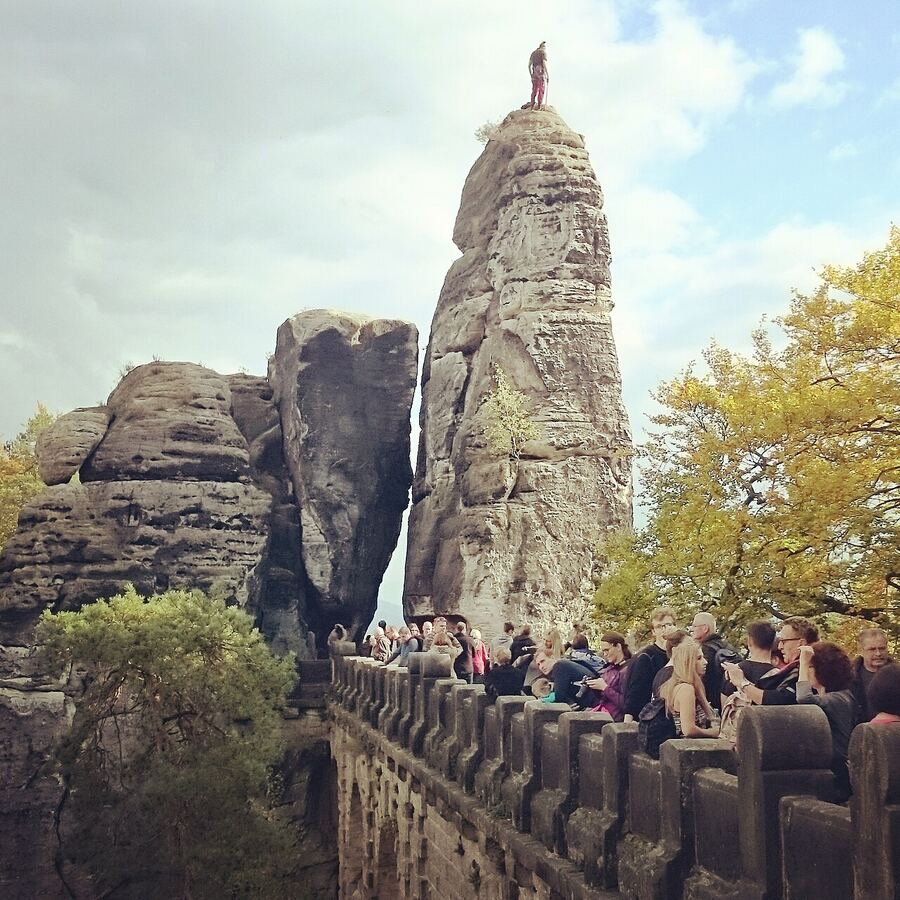

Distance · approx.
Riding time*
Terrain
Prague to Dresden, together on two wheels.
Five days of riverside rides and places worth stopping for.

Map unavailable. Use the location links on the attraction cards.
Distances and times are estimates. Allow extra time for sightseeing and detours, and follow local route signs.